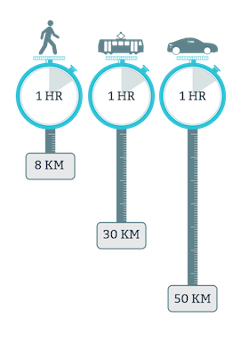

The average travel-time budget has always been around one hour per day. This is also known as the Marchetti constant throughout the urban history. This time-budget appears to be the principle for how people live in cities: the preference of traveling on average half an hour for their main journey to and from home (Newman & Jennings, 2008). Thus the Marchetti constant dictates that cites can be no more than “one hour wide.” This essentially meant that an average trip can be half an hour and a maximum trip can be one hour.
This understanding of an acceptable maximum travel time provides insight and planning priorities for cities, as a city tends to become dysfunctional beyond a particular size and spread. Cities with high density can grow larger in population because they cover less area, therefore various modes of transportation could still take people to most destinations under half an hour. On the other hand, cities with lower density will reach their size limits sooner because a city with an average transit will begin to be dysfunctional once its size spreads greater than “one hour wide”(Newman & Jennings, 2008).
The other limit to the size of a city is the overstretch of the cities’ bio-regional capacities. Cities can often exceed the capacity of their watersheds, food, energy, and materials to provide sustainable consumption, forcing the city to rely more on imports. It is therefore the human ecology and systems which leads to the shape and structure of cities.
For the argument of this thesis, I will begin by examining how cities have changed through history while keeping this major characteristic of the acceptable travel time. Understanding the way urban systems have historically been shaped by transport priorities will provide a better insight into how a more sustainable city could be shaped in the future.
